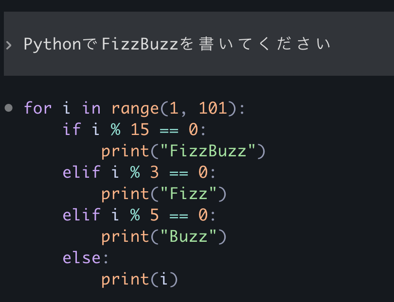
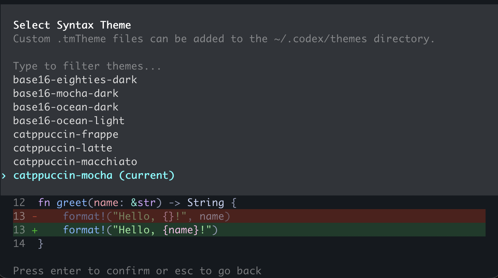
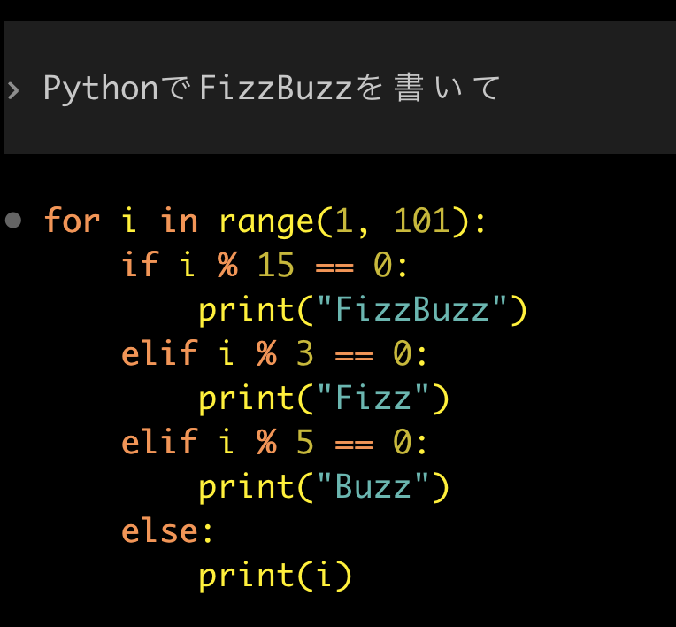
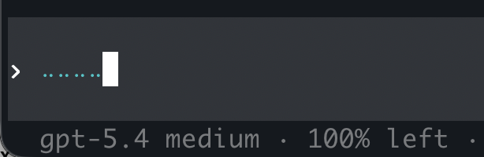
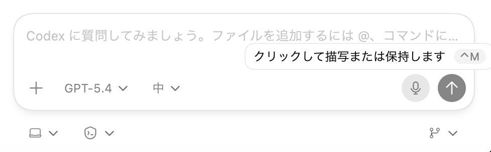

Codex CLIで（を）ソースコードリーディング！
Codex CLIで（を）ソースコードリーディング！
あの機能はどうできている？
- Event:
Codex Meetup Tokyo #1
- Presented:
2026/03/19 nikkie
Codex CLIはソースが 公開 されている🤗
https://github.com/openai/codex
Rust製
例えば Codex App
codex app-server
JSON-RPCによるプロトコル（Codex App Server） [1]
Codex CLIのソースをCodex {CLI,App}に解説してもらう日々
その中から 小さな機能2つ と、どう実装されているかを共有します
1️⃣シンタックスハイライト
Codex CLIについて [2]
https://developers.openai.com/codex/cli/features#syntax-highlighting-and-themes
{kind=link}

(GPT-5.4 medium effort)
v0.105.0 にてシンタックスハイライト追加
The TUI now syntax-highlights fenced code blocks and diffs, adds a /theme picker with live preview, and uses better theme-aware diff colors for light and dark terminals.
コードブロックや実行するコマンドが 劇的に読みやすく
では、どう実装されている？
feat(tui): syntax highlighting via syntect with theme picker #11447
catcloneの bat でも使われている
syntectを使った実装例 [4]
let syn_set = two_face::syntax::extra_newlines();
let theme_set = two_face::theme::extra();
let syn_ref = syn_set.find_syntax_by_extension("py").unwrap();
let theme = &theme_set[two_face::theme::EmbeddedThemeName::CatppuccinMocha];
let mut highlighter = syntect::easy::HighlightLines::new(syn_ref, theme);
let lines = content.lines();
let mut output = String::new();
for line in lines {
let ranges = highlighter.highlight_line(line, &syn_set).unwrap();
let escaped = syntect::util::as_24_bit_terminal_escaped(&ranges[..], false);
output.push_str(&escaped);
output.push('\n');
}
print!("{}", output);テーマは two-face [5]

カスタムテーマ
<?xml version="1.0" encoding="UTF-8"?>
<!DOCTYPE plist PUBLIC "-//Apple//DTD PLIST 1.0//EN" "http://www.apple.com/DTDs/PropertyList-1.0.dtd">
<plist version="1.0">
<dict>
<key>name</key>
<string>Sunset Aurora</string>
<key>settings</key>
<array>
<!-- Global -->
<dict>
<key>settings</key>
<dict>
<key>foreground</key><string>#fff03c</string>
<key>background</key><string>#274079</string>
<key>caret</key><string>#f19557</string>
<key>selection</key><string>#7f6575</string>
<key>lineHighlight</key><string>#6bb6b0</string>
</dict>
</dict>
<!-- Comments -->
<dict>
<key>name</key><string>Comment</string>
<key>scope</key><string>comment</string>
<key>settings</key>
<dict>
<key>foreground</key><string>#c7b83c</string>
<key>fontStyle</key><string>italic</string>
</dict>
</dict>
<!-- Keywords -->
<dict>
<key>name</key><string>Keyword</string>
<key>scope</key><string>keyword, storage.type</string>
<key>settings</key>
<dict>
<key>foreground</key><string>#f19557</string>
<key>fontStyle</key><string>bold</string>
</dict>
</dict>
<!-- Strings -->
<dict>
<key>name</key><string>String</string>
<key>scope</key><string>string</string>
<key>settings</key>
<dict>
<key>foreground</key><string>#6bb6b0</string>
</dict>
</dict>
<!-- Functions / Types -->
<dict>
<key>name</key><string>Function and Type Names</string>
<key>scope</key><string>entity.name.function, entity.name.type</string>
<key>settings</key>
<dict>
<key>foreground</key><string>#fff03c</string>
</dict>
</dict>
<!-- Constants / Numbers -->
<dict>
<key>name</key><string>Constants</string>
<key>scope</key><string>constant, constant.numeric</string>
<key>settings</key>
<dict>
<key>foreground</key><string>#c7b83c</string>
</dict>
</dict>
<!-- Invalid / Error -->
<dict>
<key>name</key><string>Invalid</string>
<key>scope</key><string>invalid</string>
<key>settings</key>
<dict>
<key>foreground</key><string>#274079</string>
<key>background</key><string>#f19557</string>
</dict>
</dict>
</array>
</dict>
</plist>/theme でカスタムテーマ選択
{kind=link}

2️⃣音声入力
Codex CLI（とCodex App）について
半角スペース を長押し（Codex CLI）

Ctrl+M （Codex App, macOS）

codex features list
voice_transcription under development false% codex --version
codex-cli 0.115.0Codex CLIの設定を変える [6]
~/.codex/config.toml を手で変更[features]
voice_transcription = true~/.codex/config.toml を変更codex features enable voice_transcription起動時に一時的に
codex --enable voice_transcription
codex -c features.voice_transcription=trueでは、どう実装されている？ (Codex CLI)
APIキー認証の場合 gpt-4o-mini-transcribe [7]
ChatGPTアカウント認証の場合、/backend-api/transcribe へ
promptパラメタでひと工夫
https://developers.openai.com/api/docs/guides/speech-to-text#prompting
前方にある テキスト（ユーザ入力）も音声と合わせて gpt-4o-mini-transcribeへ送る
メンテしている音声認識ライブラリでパクる [8]
class SpacebarLiveTranscriber:
def __init__(self) -> None:
self._worker_thread = threading.Thread(target=self._transcription_worker, daemon=True)
self._worker_thread.start()
def _transcription_worker(self) -> None:
while True:
audio = sr.AudioData(frame_data, sample_rate, sample_width)
return self.recognizer.recognize_openai(audio, model="gpt-4o-mini-transcribe").strip()まとめ🌯：あの機能はどうできている？
シンタックスハイライト：syntect（bat同様）、テーマはtwo-face
音声入力：gpt-4o-mini-transcribe、promptパラメタの工夫
Codex CLIやCodex Appで気になる ソースコードを読む のは、いいぞ
ご清聴ありがとうございました（最後に、お前、誰よ）
nikkie（にっきー）・Python歴8年
機械学習エンジニア。 Speeda AI Agent 開発。 A2A提供開始 （We're hiring!）